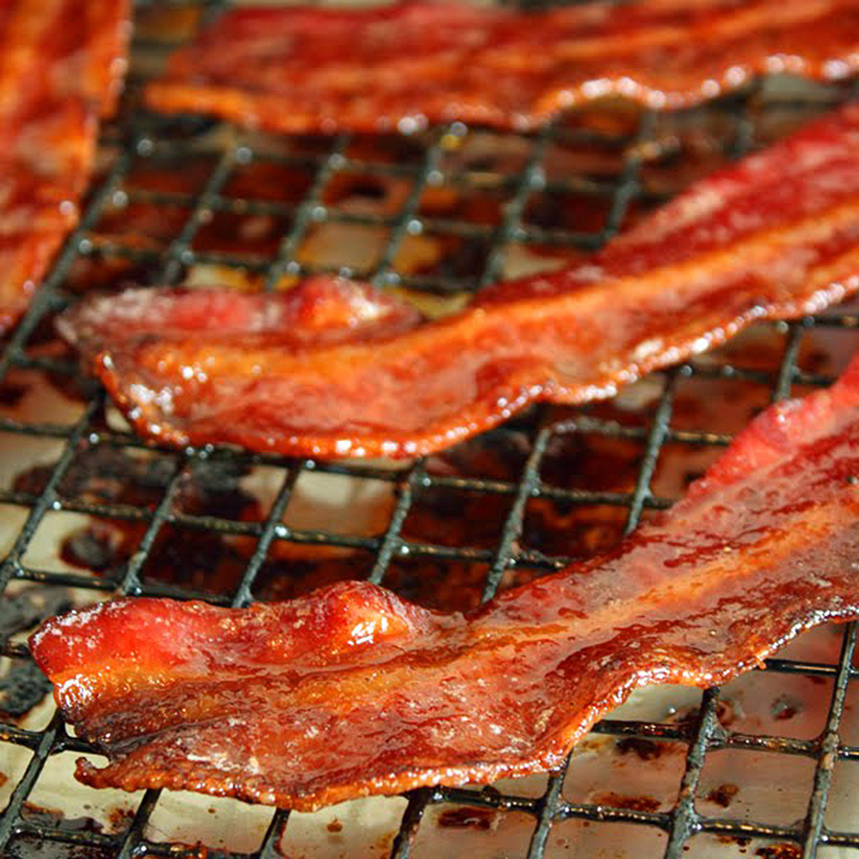

Candied Bacon

Description
Delicious caramelized bacon.
Ingredients
- 1/4 cup packed brown sugar
- 2 tablespoons rice vinegar
- 2 tablespoons maple syrup
- gound black pepper to taste
- 1 pound thick-cut bacon
Directions
- Preheat oven to 350 degrees F
- Mix brown sugar, rice vinegar, maple syrup, and black pepper in a small bowl.
- Place bacon slices on cooling rack set over a baking sheet.
- Bake in the preheated oven for 10 minutes, turn slices, and bake another 5 minutes.
- Remove bacon and brush both sides with brown sugar mixture. Return bacon to the oven and bake another 5 minutes. Repeat basting every 5 minutes until bacon is browned and crisp, about 35 minutes.